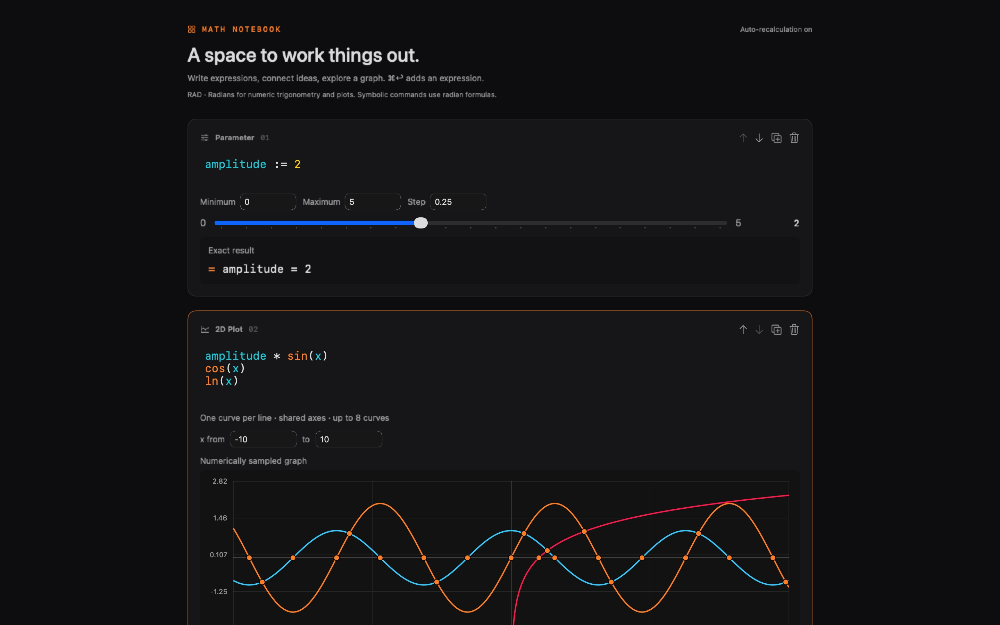

x := 3
Connected calculations
Define variables and functions once. Dependent results update automatically.
Build connected calculations, explore symbolic mathematics, and turn formulas into interactive plots — entirely on your Mac.

Define variables and functions once. Dependent results update automatically.
Simplify, differentiate, integrate, and solve alongside numerical work.
Adjust parameters, compare curves, and inspect approximate roots and intersections.
Learn what stays on your Mac and why Math Notebook does not collect personal data.
Find system requirements, common answers, and a place to report a problem.
Math Notebook uses Apple’s standard license for applications distributed through the App Store.